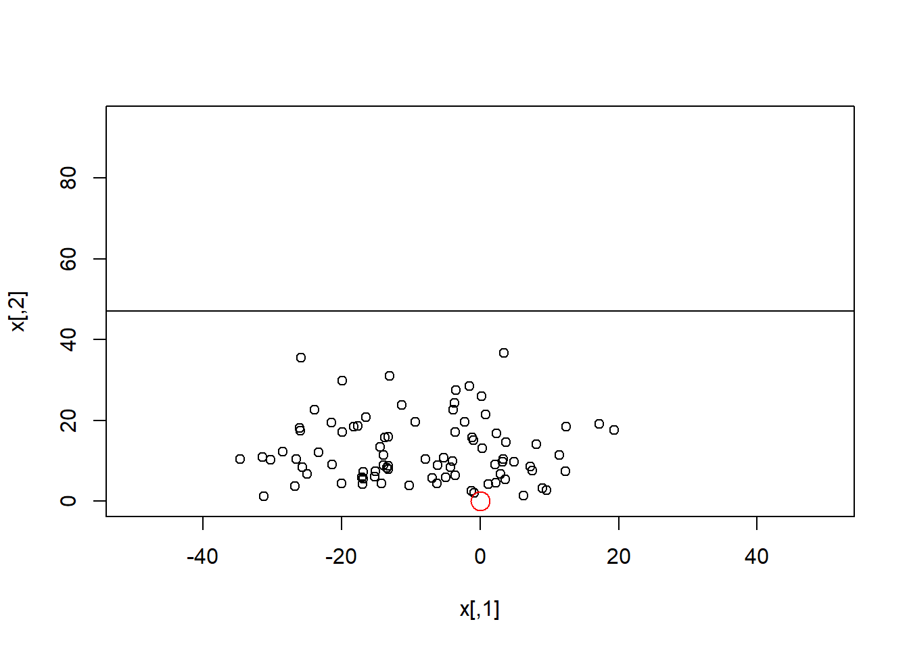
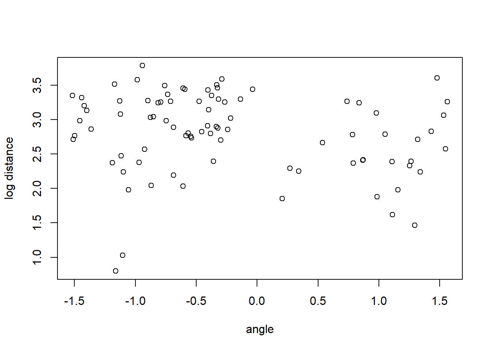
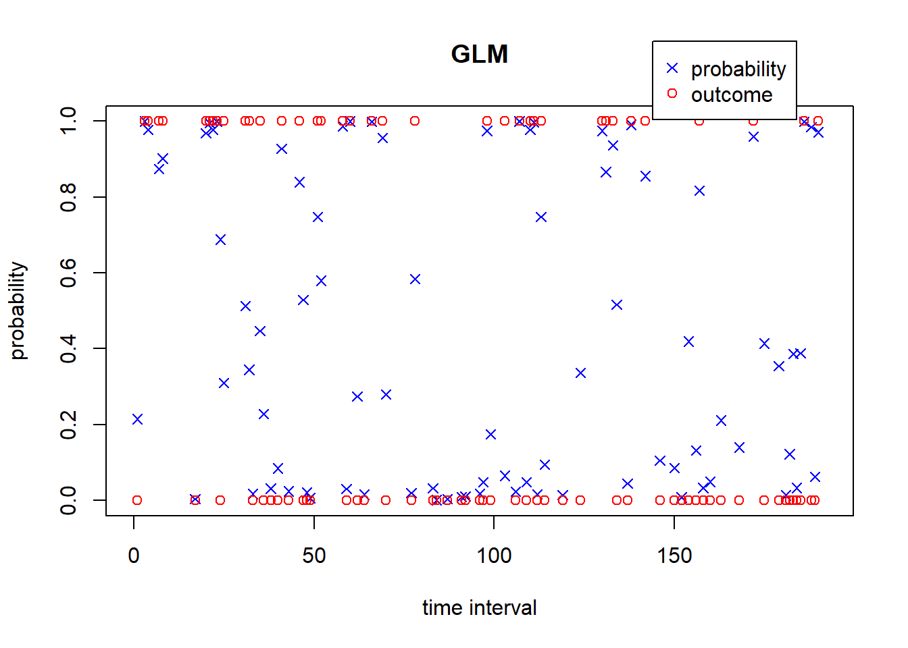
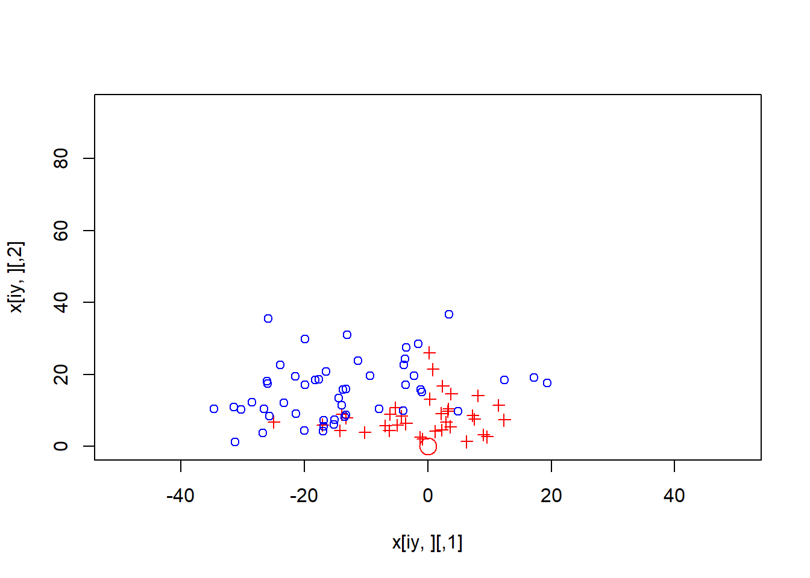
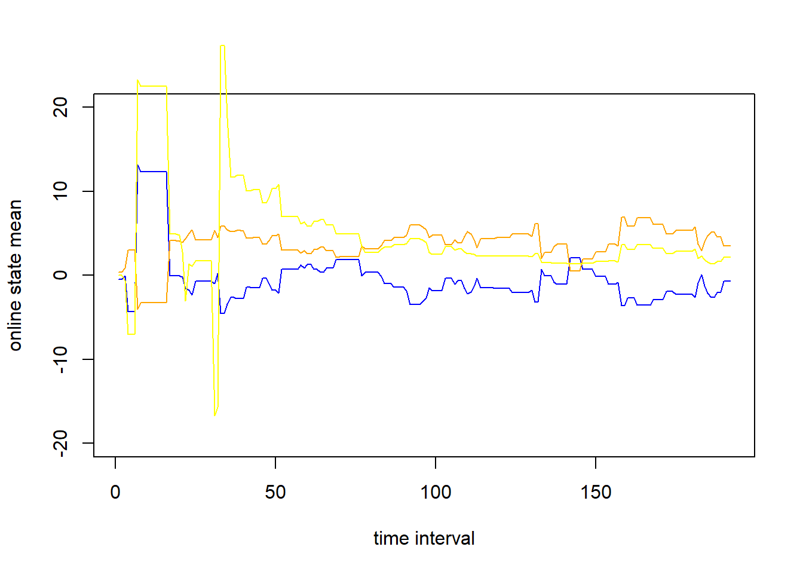
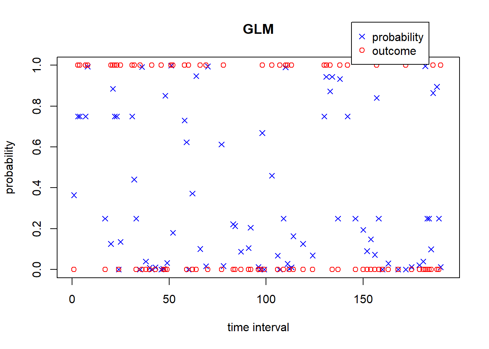

Chapter 4 DGLM On Simulated Data
#things I'm having trouble with:
#positive definite sCt[,,t]
#interpretation
#confidence interval plot
library(mvtnorm)
set.seed(3)
#court dimensions
xm <- 50; ym <- 94
#num time units within a game
T <- 48/0.25
#generating shot attempts with constant prob over the course of a game
prshot <- 0.4
#shots is binary shot attempt vector
shots <- runif(n=T) < prshot
tshot <- which(shots)
nshots <- length(tshot)
#x-y coordinates in feet. origin = basket
x <- matrix(c(xm*(2*rbeta(n=nshots, 6,8) - 1),
ym*rbeta(n=nshots, 2, 12)),
ncol = 2)
plot(x, ylim=c(0,ym), xlim=c(-xm,xm))
abline(h=ym/2)
points(0,0,col="red", cex=2)
#convert to theta and r
z <- matrix(c(atan(x[,2]/x[,1]),
sqrt(rowSums(x^2))),
ncol=2)
#a shifting factor to roughly center log(r) around 0
za <- log(ym/5)
#2 covariates and intercept
Z <- cbind(1, z[,1], log(z[,2]) - za)
plot(Z[,2], Z[,3]+za, xlab = "angle", ylab="log distance")
#generating shot success probabilities
theta <- matrix(c(-0.5, 1.5, -5.5)) #GLM parameters
p <- length(theta)
pscore <- 1/(1+exp(-Z %*% theta))
q <- rep(NaN, T)
q[shots] <- pscore
#generating shot outcomes
y <- rep(NaN, T)
y[shots] <- runif(n=nshots) <= pscore
iy <- which(y[!is.nan(y)] == 1)
par(xpd=TRUE)
plot(0,0,type="n",xlim = c(0,T),ylim=c(0,1), ylab = "probability", xlab = "time interval", main = "GLM")
points(tshot, q[tshot], pch=4, col = "blue")
points(tshot, y[tshot], pch=1, col = "red")
legend(x=T*0.75, y=1.21, legend=c("probability", "outcome"), pch = c(4,1), col=c("blue", "red"))
plot(x[iy,], ylim=c(0,ym), xlim=c(-xm,xm), col = "red", pch = 3)
points(x[-iy,], col ="blue", pch = 1)
points(0,0,col="red", cex=2)
#set up DGLM and initial prior
#first, set up covariates per time interval
F <- t(Z)
p <- dim(F)[1]
mt <- rep(0,p) #prior mean vector
Ct <- diag(p) #prior covariance matrix
delta <- 0.99 #discount factor; "streaky parameter"
#forward filtering (FF)
smt <- matrix(rep(0,p*T), nrow=p) #save post means
sCt <- array(rep(0,p*p*T), dim = c(p,p,T)) #save post covars
spt <- rep(NaN, T) #save post prob success
lmlik <- rep(0,T) #marg lik per time int
ishot <- 0
for(t in 1:T){
if(t %in% tshot){
#current shot attempt index, and time
ishot <- ishot + 1
ti <- tshot[ishot]
ft <- (F[,ishot]) %*% mt
At <- Ct %*% F[,ishot]/delta
qt <- (F[,ishot]) %*% At
At <- At/as.numeric(qt)
#prior mean and var of linear predictor, and adaptive vector
#compute approx prior Beta(r,s) params; update w/ numerical iterations for exact values
eft <- exp(ft) #crude initial values
rt <- (1+eft)/qt
st <- rt/eft
rt <- max(0.5, rt)
st <- max(0.5, st)
#iterative numerical solution
ep <- 0.5; drt <- 1; dst <- 1; xt <- matrix(c(rt, st))
while(max(drt, dst) < ep){
r0t <- psigamma(rt,0); s0t <- psigamma(st,0)
r1t <- psigamma(rt,1); s1t <- psigamma(st,1)
fxt <- c(r0t-s0t-ft, r1t+s1t-qt)
Axt <- matrix(c(r1t, -s1t, psigamma(rt, 2), psigamma(st, 2)), ncol=2, byrow = TRUE)
xt <- xt - solve(Axt, fxt)
drt <- xt[1] - rt; dst <- xt[2] - st
rt <- xt[1]; st <- xt[2]
}
lmlik[t] <- lgamma(rt+st) - lgamma(rt) - lgamma(st) +
lgamma(rt+y[t]) + lgamma(st+1-y[t]) - lgamma(rt+st+1) +
lgamma(2) - lgamma(1+y[t]) - lgamma(2-y[t])
rts <- rt + y[t]; sts <- st + 1-y[t] #posterior beta params
#convert to mean and variance for linear predictor
fts <- psigamma(rts,0)-psigamma(sts,0); qts <- psigamma(rts,1)+psigamma(sts,0)
spt[t] <- rts/(sts+rts)
#update state parameters
mt <- mt+At%*%(fts-ft)
Ct <- Ct/delta - (At%*%t(At))*as.numeric(qt-qts)
Ct <- (Ct + t(Ct))/2
c(t, rt, st, mt)
if(any(is.nan(mt))){
print("stop")
break
}
}
smt[,t] <- mt; sCt[,,t] <- Ct #saving
}
#THIS IS NOT RIGHT. YELLOW IS TOO WONKY
plot(smt[1,],type="l", col = "blue", ylim = c(-20, 20), xlab = "time interval", ylab = "online state mean")
lines(smt[2,],type="l", col = "orange")
lines(smt[3,],type="l", col = "yellow")
par(xpd=TRUE)
plot(0,0,type="n",xlim = c(0,T),ylim=c(0,1), ylab = "probability", xlab = "time interval", main = "GLM")
points(tshot, spt[tshot], pch=4, col = "blue")
points(tshot, y[tshot], pch=1, col = "red")
legend(x=T*0.75, y=1.21, legend=c("probability", "outcome"), pch = c(4,1), col=c("blue", "red"))
#Backward sampling
nmc <- 1000
#save posterior means and posterior success probs
MCtheta <- array(0, c(p, T, nmc))
MCq <- array(0, c(T, nmc))
#begin BS at timeunit T
thetat <- rmvnorm(n=nmc, smt[,T], sCt[,,T])
MCtheta[,T,] <- t(thetat)
MCq[T,] <- 1/(1+exp(-thetat %*% F[,nshots]))
#then recurse backwards
ishot <- nshots + 1
for(t in (T-1):1){
if(t %in% tshot){
ht = (1-delta)*t(array(smt[,7], c(dim(smt)[1], nmc))) + delta*thetat
#run a simulation for each row of ht and each 3rd dim of sCt
thetat <- t(apply(ht, 1, rmvnorm, n=1, sigma = sCt[,,t]*(1-delta)))
MCtheta[,t,] <- t(thetat)
ishot <- ishot - 1; ti <- tshot[ishot]
MCq[t,] <- 1/(1+exp(-thetat %*% F[,ishot]))
}
}
#retrospective posterior summaries
pr <- t(apply(MCq[tshot,], 1, quantile, c(.025, .25, .5, .75, .975), na.rm=TRUE)) #get quantiles of each row
#plot() #I can't do ciplot...
# for(j in 1:p){
#
# }